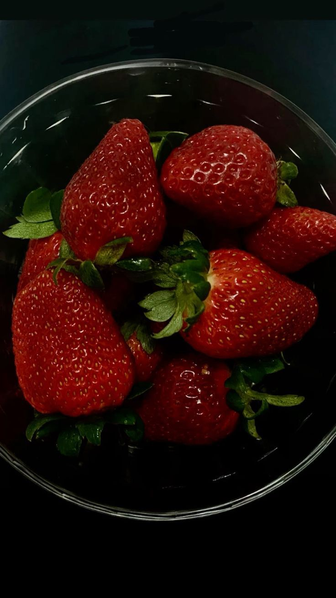
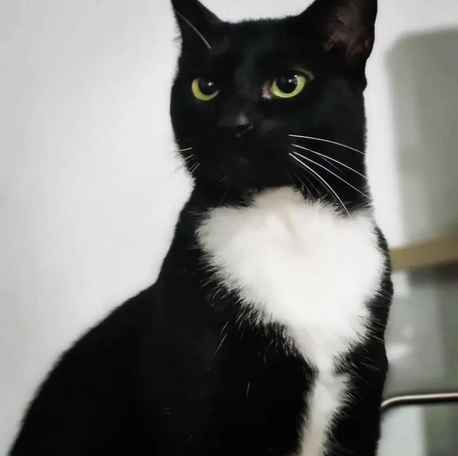

Vivian Rosana Carrillo Cuentas
"Tenho em mim todos os sonhos do mundo." Fernando Pessoa
About Me
Olá! Meu nome é Vivian Rosana Cuentas, tenho 25 anos sou uma pessoa sonhadora ,apaixonada por animais,natureza,sou ativista e protetora da causa animal , vegana e sempre gostei de novos desafios.
Estou aqui para compartilhar um pouco mais sobre minha vida.
Hobbies
Meus hobbies favoritos são fazer trilha e me aventurar em esportes extremos.
desenhar, costurar, e pintar quadros
Atividades Físicas e esportes de alto risco.
Favorite Foods


Minha comida favorita é lasanha de berenjela e batata frita, pure de batata, torta de casca de batata , batata palha, tudo que tiver batata kkk
e minha sobremesas favorita qualquer fruta,mas eu amo morango kiwi e especialmente manga.
My Pets
MISHI
PIKI

TAILS
ROUGE

AKINA
MIKU
BABY